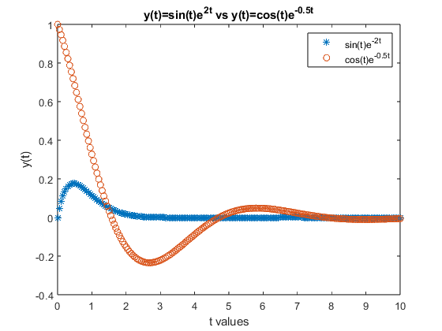
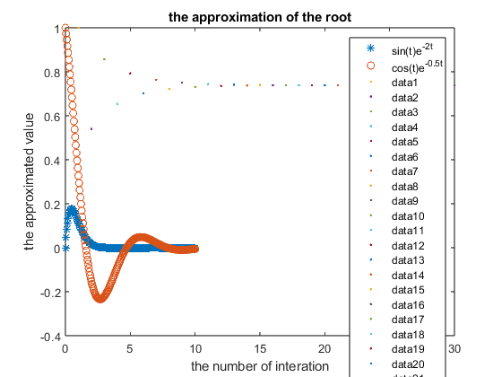
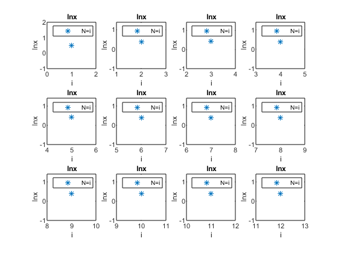

Contents
Q1
clear clc t=0:.05:10; y1=(sin(t)).*exp(-2.*t); y2=cos(t).*exp(-0.5.*t); plot(t,y1,"*") hold on plot(t,y2,"o") title('y(t)=sin(t)e^{2t} vs y(t)=cos(t)e^{-0.5t}') xlabel('t values') ylabel('y(t)') legend('sin(t)e^{-2t}','cos(t)e^{-0.5t}')

Q2
clear clc n=0; k=0; while k<10 if n^2>3000 fprintf('%d\n ',n^2) k=k+1; end n=n+1; end % 3025 % 3136 % 3249 % 3364 % 3481 % 3600 % 3721 % 3844 % 3969 % 4096
3025 3136 3249 3364 3481 3600 3721 3844 3969 4096
Q3
clear clc g=@(x) cos(x); p0=0; TOL=10^(-5); N0=100; i=1; while i<=N0 p=g(p0); plot(i,p,'.') hold on if abs(p-p0)<TOL fprintf('the procedure was successful: root is:%f \n',p) break end i=i+1; p0=p; if i==N0 fprintf('the method failed after %d interations, the procedure was unsuccessful.\n ',i) end end title('the approximation of the root') xlabel('the number of interation') ylabel('the approximated value') % the procedure was successful: root is:0.739082
the procedure was successful: root is:0.739082

Q4
clear clc n=1; p=0; x=1.5; while true p=0; for i=1:n p=p+(-1)^(i+1)/i*(x-1)^i; subplot(3,4,i) plot(i,p,'*') title('lnx') xlabel('i') ylabel('lnx') legend('N=i') end if abs(0.40546511-p)<10^(-5) fprintf('the approximation needed %d terms and was: %f\n',n,p) break end n=n+1; end % the approximation needed 12 terms and was: 0.405459
the approximation needed 12 terms and was: 0.405459
